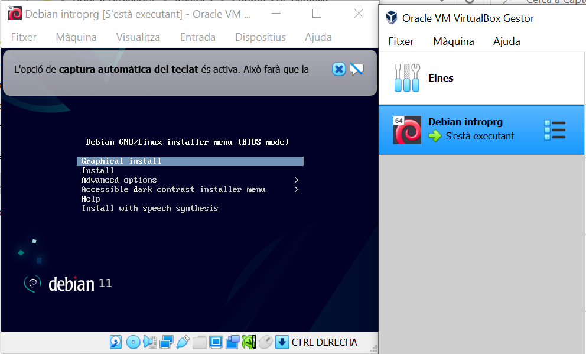

Instaŀlació de Debian
Has arribat aquí un cop t'has descarregat la imatge de Debian i has decidit si faràs servir una partició dedicada o bé una màquina virtual.
Has arrencat la imatge i t'has trobat el següent menú:
La major part de les opcions que hauràs de seleccionar a partir d'ara són les que apareixen per defecte. Permet-me que et llisti aquelles per les que has de prendre alguna decisió:
Escull Graphical Install o Install en el primer menu
Et proposo que escullis com a idioma català, o, si més no, algun idioma que tingui la mateixa manera de representar els decimals (ex.
3,1416amb coma i no punt) És una recomanació per evitar-te problemes posteriors de localització. Pregunta si tens dubtes.Com a nom de sistema pots posar el que t'agradi més. Si no tens cap preferència, debian o debian11 pot ser una bona elecció.
No cal que posis nom de domini a menys que tinguis alguna raó per fer-ho
Ara et demanarà una contrasenya per l'usuari root. Es tracta d'un usuari molt especial del sistema que té privilegis per fer pràcticament tot.
Escull una bona contrasenya per a root i guarda-la en un bon lloc. Si la perds, podries recuperar el sistema però t'ho hauràs de treballar una mica.
Què és una bona contrasenya? Bé, sense posar-nos paranoics doncs no treballarem amb dades de vida o mort, però intentant dificultar un atac d'un company maliciós, et proposo que la teva contrasenya contingui nombres, lletres majúscules i minúscules i, potser, algun símbol (ex. un punt). A mi durant una temporada em va donar per posar trossos de cançons escrites com si fossin pronunciades en català (ex.
Ai.jAf.An.Ap01)A continuació et demanarà el teu nom. Et proposo que li posis el nom real doncs simplificarà alguns elements de configuració.
Et proposarà un nom d'usuari. Et recomano que sigui breu doncs apareixerà a molts llocs i potser et tocarà teclejar-lo de tant en tant.
Tot seguit et demanarà una contrasenya pel teu usuari. Aquesta contrasenya és preferible que sigui diferent de la de root i, donat que configurarem el teu usuari amb uns privilegis especials, és interessant que també sigui segura.
A l'hora d'escollir la partició del disc sí que has d'anar amb compte.
Si no vols que l'equip contingui més sistemes operatius, escull l'opció guiada utilitzant el disc sencer.
Altrament, escull l'opció manual que et permetrà crear particions addicionals i, fins i tot, encongir o ampliar les existents.
Com que és una tasca que pot ocasionar pèrdues de dades, si tens dubtes, és millor que preguntis.
Abans de fer cap canvi et mostrarà el resum del que li has demanat que faci i et deixarà confirmar amb la pregunta Voleu escriure els canvis al disc?
la majoria de les vegades et serà segur instaŀlar el carregador GRUB: un menú que t'apareixerà quan arrenquis el teu equip per escollir sistema operatiu, fins i tot en el cas que només tinguis un.
Caldrà que l'acceptis i que seleccionis la partició en que has escollit instaŀlar el sistema operatiu.
Finalment, si tot ha anat bé, t'indicarà que la instaŀlació s'ha completat i que arrencarà el teu nou sistema!
En prosseguir, et sortirà el teu nom d'usuari i el requeriment de contrasenya per poder accedir al sistema.
Felicitats! És el moment d'investigar una mica respecte què t'ofereix el teu nou sistema operatiu.